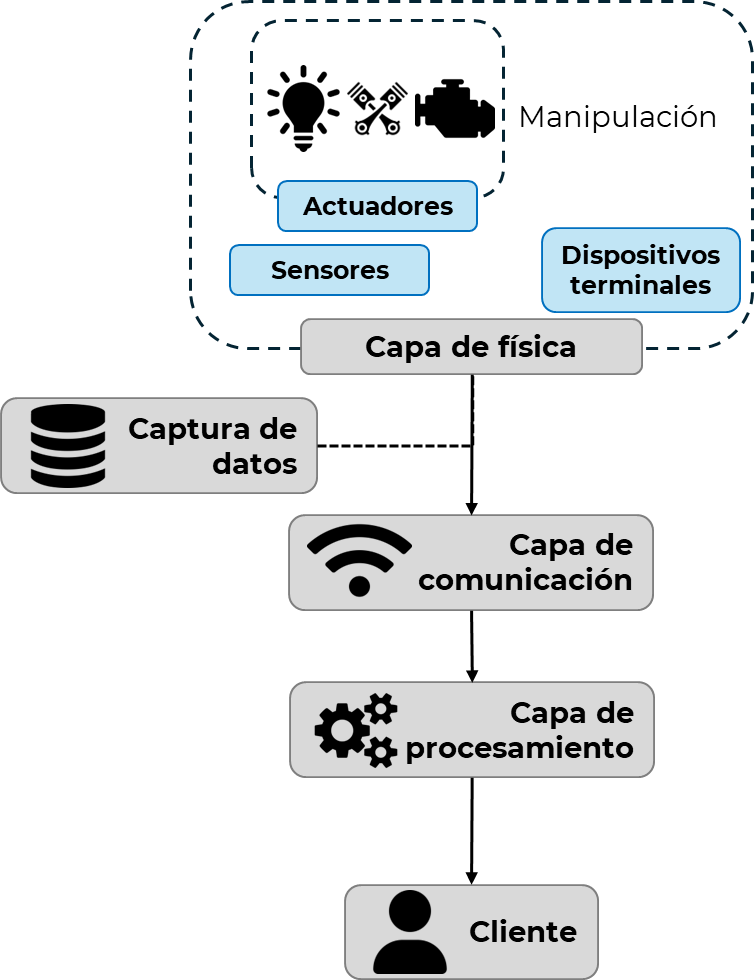
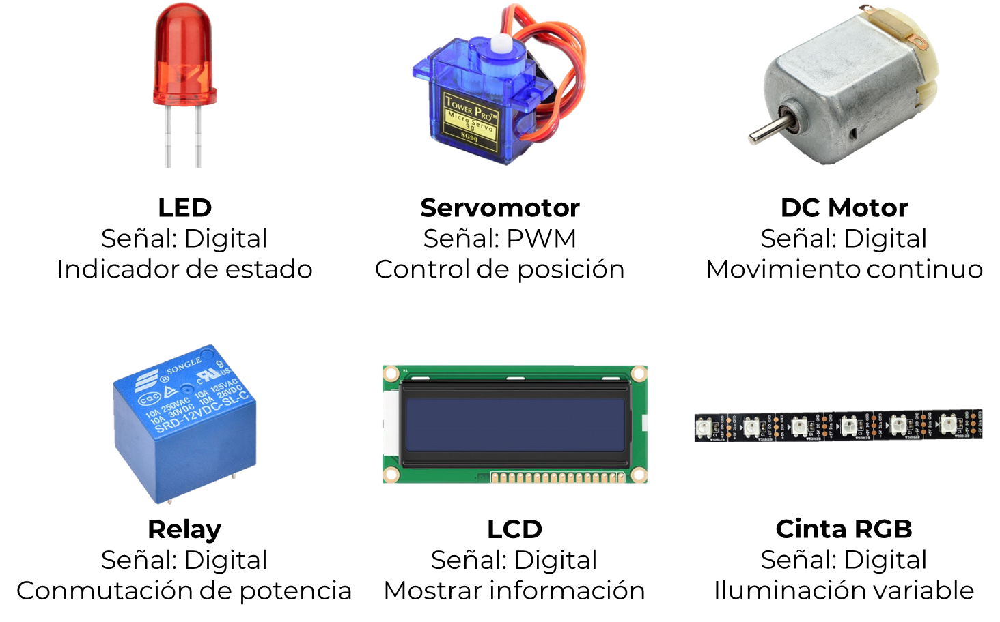
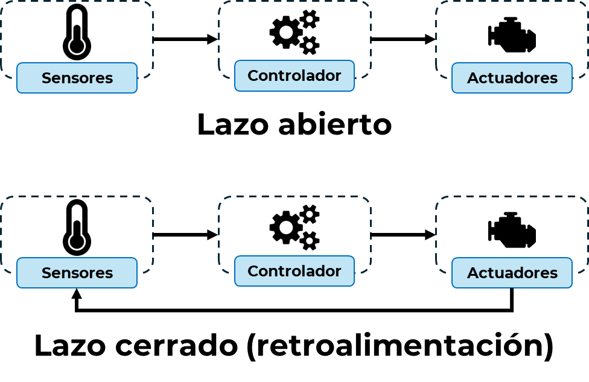

Módulo 2.2. Actuadores en IoT
Los actuadores son componentes clave en los sistemas IoT porque permiten transformar decisiones digitales en acciones físicas. A diferencia de los sensores que capturan información del entorno, los actuadores ejecutan comandos enviados desde el sistema, como encender motores, abrir válvulas, cambiar la intensidad de una luz o mover un brazo robótico.
Piénsalo así: Si un sensor es un oído, un actuador es una mano que responde a lo que se escucha.
Video 2:
Electrónica: Actuadores en Aplicaciones IoT | | UPV
Ver completo

Mapa conceptual: "Actuadores y su rol en la capa de física IoT". Elaboración propia
Clasificación de actuadores
Los actuadores reciben una señal de control (digital, analógica o PWM) y la transforman en una acción física: movimiento, luz, sonido, apertura de válvula, etc. Para funcionar, muchos requieren una fuente de energía externa (eléctrica, neumática, hidráulica).
Se clasifican según:
-
Tipo de energía de entrada:
- Eléctricos: utilizan corriente eléctrica para generar movimiento. Ej.: servomotores, relés, solenoides.
- Neumáticos: utilizan aire comprimido. Ej.: cilindros de simple/doble efecto.
- Hidráulicos: funcionan con presión de aceite. Ej.: pistones hidráulicos en maquinaria pesada.
-
Tipo de salida o efecto físico generado:
- Lineales: generan desplazamiento en una dirección. Ej.: solenoides, pistones.
- Rotativos: producen rotación. Ej.: motores DC, motores paso a paso.
- Ópticos: modifican condiciones luminosas. Ej.: LEDs, pantallas.
- Térmicos: modifican la temperatura. Ej.: resistencias calefactoras.
-
Según el controlador o la lógica de activación:
- Binarios: tienen solo dos estados (ON/OFF), como un relé o una electroválvula.
- Proporcionales: su salida varía de forma continua. Ejemplo: motor con control PWM (modulación por ancho de pulso) para regular velocidad.
- Inteligentes: integran sensores y microcontroladores, permitiendo control autónomo o en red.
| Tipo de actuador | Energía de entrada | Movimiento | Señal de control | Ejemplos |
|---|---|---|---|---|
| Eléctrico | Eléctrica | Lineal | Digital/PWM | Servo, relé |
| Neumático | Aire comprimido | Lineal | Mecánico | Cilindro neumático |
| Hidráulico | Aceite | Lineal | Mecánico | Pistón hidráulico |
Actuadores comunes
A continuación, se presentan algunos actuadores frecuentes en kits de desarrollo como el ESP32:
| Actuador | Descripción | Aplicación en IoT |
|---|---|---|
| LED | Emisión de luz simple | Indicador de estado |
| Motor DC | Rotación continua | Movimiento de ruedas o ventiladores |
| Servo motor | Rotación limitada (0-180°) | Control de dirección o posición |
| Relé | Interruptor eléctrico controlado digitalmente | Encendido/apagado de dispositivos de alto voltaje |
| Pantalla LCD | Visualización de texto | Mostrar datos de sensores o mensajes |
| Cinta LED RGB | Iluminación multicolor programable | Indicadores visuales dinámicos |

Figura 7: Collage de actuadores comunes. Elaboración propia
Consideraciones prácticas de integración
Al trabajar con actuadores en tus prototipos IoT, es importante tener en cuenta algunos aspectos técnicos y de seguridad para garantizar un funcionamiento correcto y seguro:
- Requisitos eléctricos: Cada actuador necesita una alimentación específica. Debes revisar la tensión (voltaje), la corriente necesaria y el tipo de señal de control que utiliza ya sea PWM (modulación por ancho de pulso), digital (encendido/apagado) o analógica (valores continuos).
- Aislamiento eléctrico: Para proteger el microcontrolador de posibles sobrecargas, es común usar relés electromecánicos u optoacopladores. Estos componentes ayudan a separar eléctricamente el circuito de control del actuador.
- Velocidad de respuesta: Algunos actuadores, como servomotores o válvulas, tienen tiempos específicos para activarse o apagarse. Es importante conocerlos para evitar errores o daños.
- Retroalimentación: En aplicaciones más avanzadas, ciertos actuadores incluyen sensores que indican su posición o estado. Esta información permite implementar control en lazo cerrado, donde el sistema ajusta su comportamiento en tiempo real.

Figura 8: Ciclo sensor → lógica → actuador (control en lazo abierto y cerrado). Elaboración propia
Ejemplos de aplicación
Veamos cómo se integran sensores y actuadores en sistemas de la vida real:
- Riego automatizado: Un sensor de humedad mide el nivel de agua en el suelo. Si está por debajo del umbral, el sistema activa una válvula de agua mediante un relé, permitiendo el riego solo cuando es necesario.
- Control de iluminación: Cuando un sensor detecta baja luminosidad en el ambiente, se enciende automáticamente una cinta LED RGB para mejorar la visibilidad o crear efectos decorativos.
- Casa inteligente (smart home): Un sistema puede abrir cortinas automáticas utilizando servomotores, ya sea según el horario programado o según los niveles de luz ambiente detectados.
Conclusiones
Los actuadores desempeñan un papel fundamental en los sistemas IoT, ya que permiten que las decisiones tomadas por el sistema se conviertan en acciones físicas que afectan el entorno. Al igual que los sensores recolectan datos del mundo real, los actuadores son responsables de ejecutar respuestas, como encender una luz, mover un motor o abrir una válvula. Comprender su funcionamiento, los tipos más comunes utilizados en proyectos educativos y cómo se integran con los sensores en una lógica de control, es esencial para diseñar soluciones efectivas en el contexto del Internet de las Cosas. Saber elegir el actuador adecuado según la necesidad y el tipo de señal es una competencia clave para cualquier estudiante que quiera avanzar hacia el desarrollo de sistemas automatizados, eficientes y adaptables. En resumen, los actuadores completan el ciclo sensor-procesamiento-acción, haciendo que los sistemas conectados pasen del análisis a la acción real.
Referencias
- A. Al-Fuqaha, M. Guizani, M. Mohammadi, M. Aledhari, y M. Ayyash, "Internet of Things: A Survey on Enabling Technologies, Protocols and Applications," IEEE Communications Surveys & Tutorials, vol. 17, no. 4, pp. 2347-2376, 2015.
- L. Atzori, A. Iera y G. Morabito, "The Internet of Things: A survey," Computer Networks, vol. 54, no. 15, pp. 2787-2805, 2010.
- M. Colakovic y M. Hadzialic, "Internet of Things (IoT): A review of enabling technologies, challenges, and open research issues," Computer Networks, vol. 144, pp. 17-39, 2018.
- R. Shahid y S. Aneja, "Internet of Things (IoT): Vision, Applications Areas and Research Challenges," International Journal of Computer Applications, vol. 162, no. 11, pp. 31-37, 2017.
- Y. Lin, Y. Yu, H. Zhang et al., "A Survey on Internet of Things: Architecture, Enabling Technologies, Security and Privacy, and Applications," IEEE Internet of Things Journal, vol. 4, no. 5, pp. 1125-1142, 2017.
- F. Xia, L. T. Yang, L. Wang y A. Vinel, "Internet of Things," International Journal of Communication Systems, vol. 25, no. 9, pp. 1101-1102, 2012.